빠른 시작¶
이 장에서는 플러그인을 막 설치한 상태에서 출발해, Bradypus variegatus(갈색목세발가락나무늘보)의 서식적합도 지도와 현장 조사지점 목록을 만드는 데까지 따라가 봅니다. 원 Maxent 논문 (Phillips, Anderson & Schapire 2006)이 사용한 바로 그 종입니다.
각 단계에는 실제 QGIS 화면을 실었습니다. 그림의 빨간 상자와 번호는 그림 아래 번호 목록과 짝을 이루므로, 번호 순서대로 따라 누르시면 됩니다.
얼마나 걸리나요?
모두 10분 정도입니다. 대부분은 9단계의 모델 학습 시간이며, 학습은 백그라운드에서 진행되므로 그동안에도 QGIS를 쓸 수 있습니다.
1부. 예제 데이터 받기¶
1단계. 예제 데이터셋 다운로드 창 열기¶
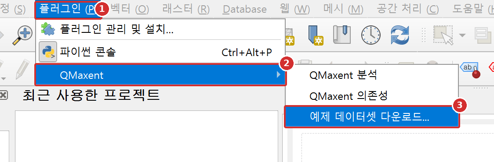
- QGIS 메뉴 막대에서 플러그인 메뉴를 엽니다.
- QMaxent에 마우스를 올립니다.
- 예제 데이터셋 다운로드...를 누릅니다.
2단계. Bradypus를 골라 다운로드¶
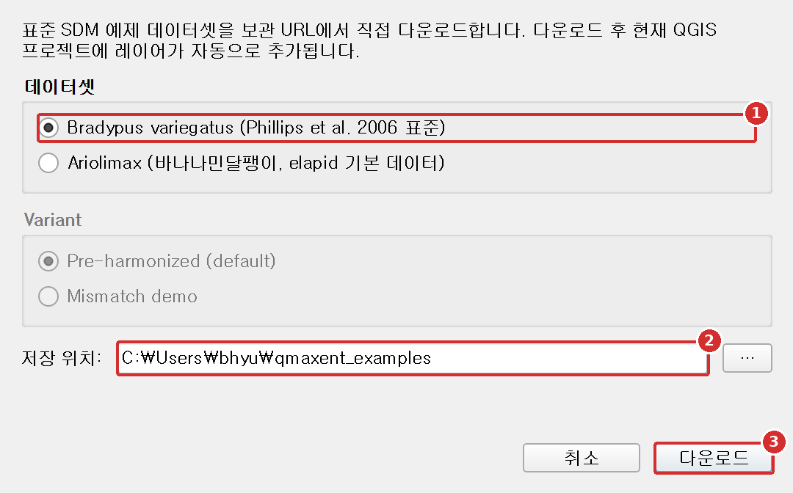
- Bradypus variegatus를 선택합니다.
- 저장 위치의 폴더를 확인합니다. 기본값은 홈 폴더 아래
qmaxent_examples폴더이며, ...를 눌러 다른 곳을 고를 수 있습니다. - 다운로드를 누릅니다.
몇 초 뒤 아래 메시지가 나타나면 OK를 누릅니다.
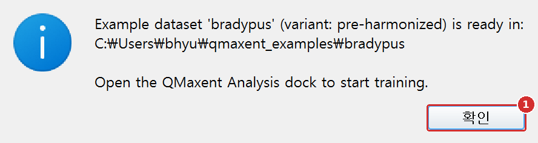
3단계. 지도에 올라온 레이어 확인¶
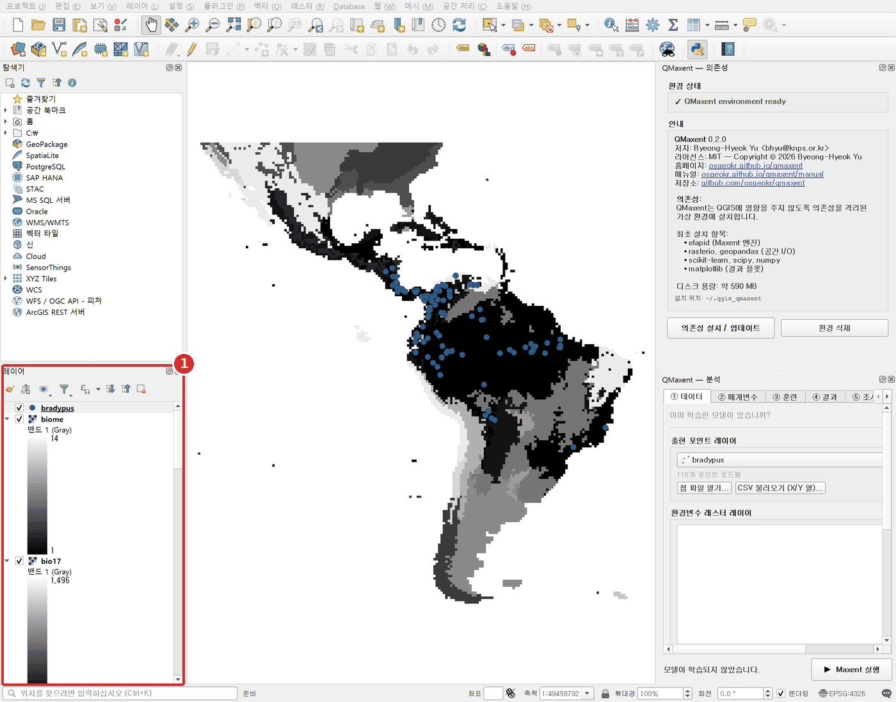
- 레이어 패널에 출현 레이어
bradypus와 환경변수 래스터 9개(bio1~bio17,biome)가 추가됩니다. 지도 위 파란 점이 이 종이 기록된 116개 지점입니다.
2부. 데이터 준비(① 데이터 탭)¶
4단계. 분석 도크 열기¶
플러그인 → QMaxent → QMaxent 분석을 누르면 QGIS 오른쪽에 분석 도크가 열립니다.
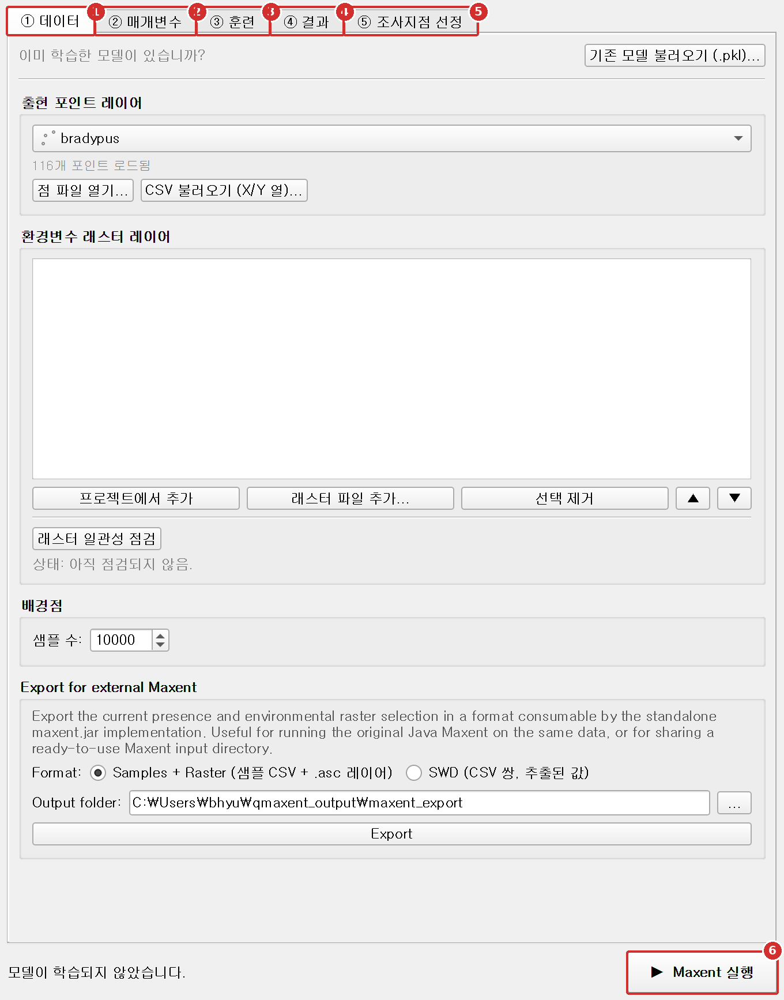
- ① 데이터: 출현 지점과 환경변수 래스터를 고릅니다.
- ② 매개변수: 모델을 어떻게 적합하고 평가할지 정합니다.
- ③ 훈련: 모델 학습 진행 상황과 로그를 봅니다.
- ④ 결과: 반응 곡선과 변수 중요도를 보고, 서식적합도 지도를 만듭니다.
- ⑤ 조사지점 선정: 지도에서 현장 조사지점을 고릅니다.
- ▶ Maxent 실행: 모델 학습을 시작합니다. 앞의 두 탭을 마친 뒤에 누릅니다.
탭은 왼쪽에서 오른쪽 순서로 진행합니다.
5단계. 출현 지점 고르기¶
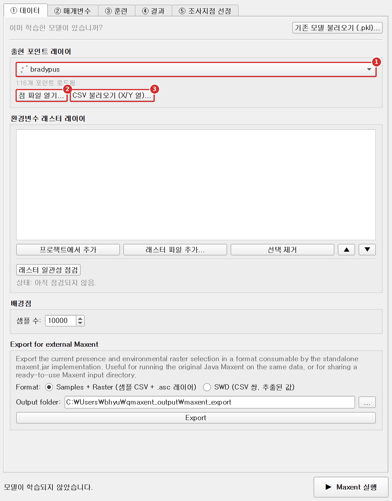
- 출현 포인트 레이어에서
bradypus를 고릅니다. 아래 줄에 불러온 출현점 수(116개)가 표시됩니다. - 점 파일 열기...는 프로젝트에 아직 없는 점 파일(GeoPackage, 셰이프파일 등)을 불러올 때 씁니다.
- CSV 불러오기 (X/Y 열)...는 좌표 열이 있는 표를 불러올 때 씁니다. 이 예제에서는 두 버튼 모두 쓰지 않습니다.
6단계. 환경변수 래스터 추가¶
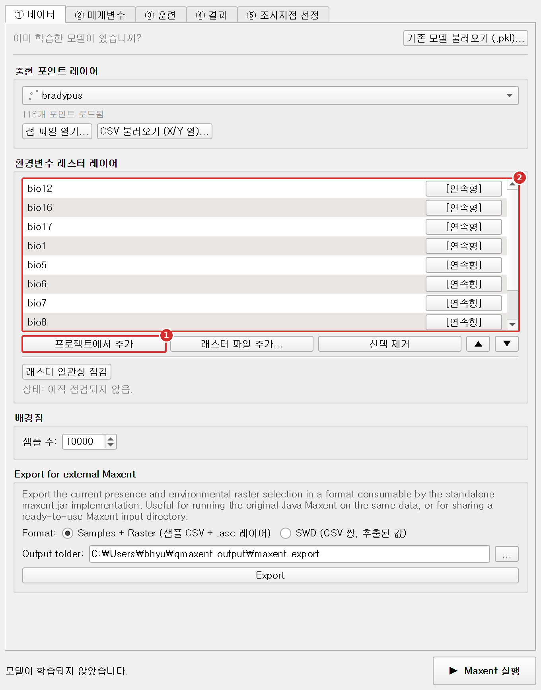
- 프로젝트에서 추가를 누릅니다.
- 프로젝트의 래스터가 모두 목록에 들어옵니다. 각 줄 오른쪽 버튼은 그 래스터를
연속형(
[continuous])으로 볼지 범주형([categorical])으로 볼지 보여 주며, 눌러서 바꿀 수 있습니다. 목록을 내려biome이 범주형으로 표시되어 있는지 확인하세요. 값이 양이 아니라 분류 코드이기 때문입니다.
7단계. 래스터가 서로 맞는지 점검¶
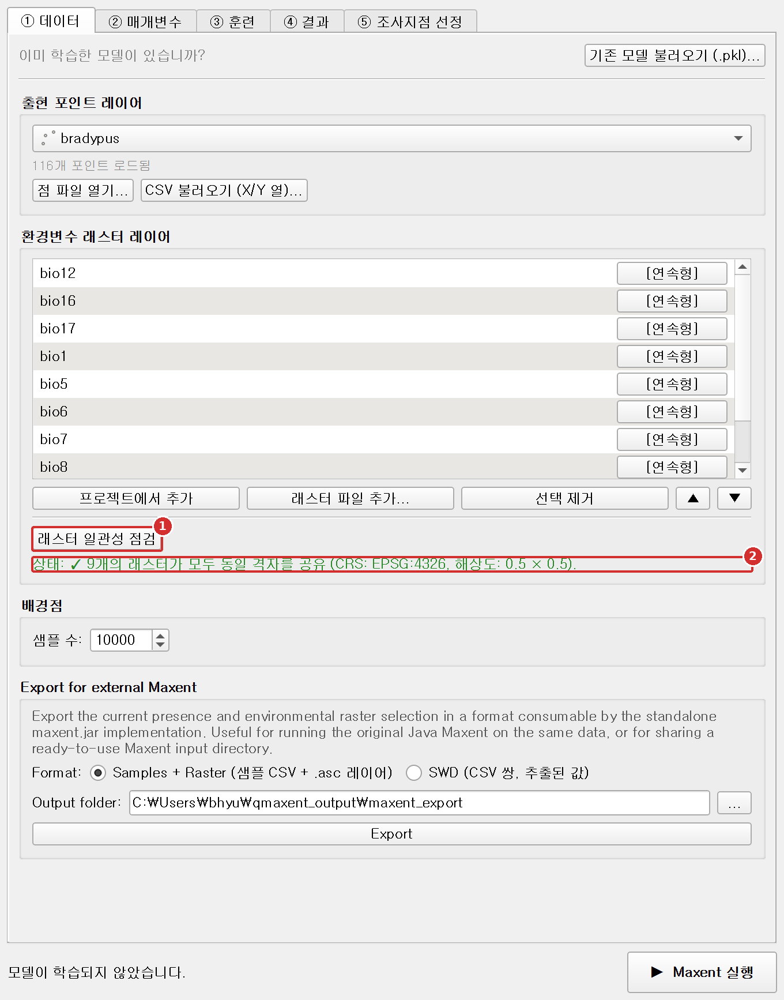
- 래스터 일관성 점검을 누릅니다.
- 상태 줄이 초록색으로 바뀌고, 9개 래스터가 같은 격자(좌표계 EPSG:4326, 해상도 0.5 × 0.5)를 쓴다고 알려 줍니다. 빨간색으로 바뀌면 래스터가 맞지 않을 때를 참고하세요.
3부. 모델 학습(② 매개변수, ③ 훈련)¶
8단계. 매개변수 확인¶
② 매개변수 탭을 누릅니다. 처음에는 기본값을 그대로 둡니다.

- 피처 타입: 자동 (출현점 수에 따른 maxnet 기본 규칙)이 출현점 수에 맞춰 피처 종류를 고릅니다. 출현점이 116개이면 선형, 이차, 곱, 힌지(LQPH)를 씁니다.
- 정규화: 배수 1.00이 일반적인 출발값입니다.
- 공간 평가: 5개 폴드의 Geographic K-Fold가 학습에 쓰지 않은 지역에서 모델을 검증합니다. 랜덤 시드 고정: 42는 같은 결과를 다시 얻게 해 줍니다.
이 기본값은 무난한 출발점일 뿐(Phillips & Dudík 2008; Phillips et al. 2017), 여러분의 자료에 가장 좋은 설정이라는 보장은 아닙니다.
9단계. Maxent 실행¶
도크 아래의 ▶ Maxent 실행을 누르면 ③ 훈련 탭으로 넘어갑니다.
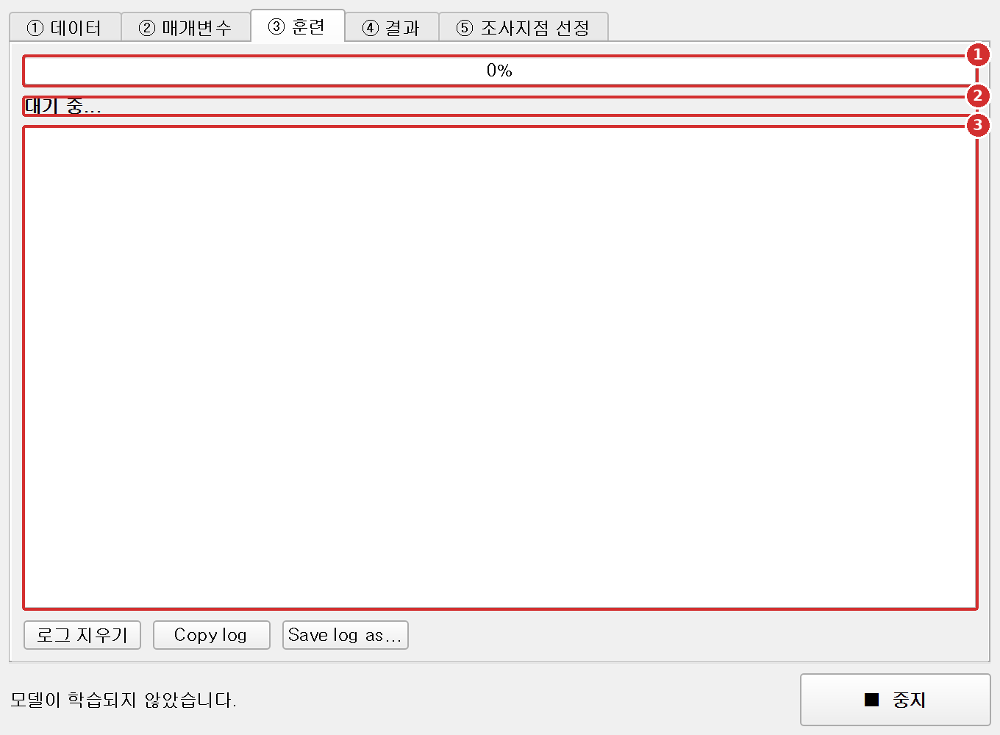
- 진행 막대가 얼마나 진행되었는지 보여 줍니다.
- 그 아래 줄에 지금 하고 있는 단계가 표시됩니다.
- 로그 창에 모든 단계가 차례로 기록됩니다.
학습이 끝나면 다음과 같이 바뀝니다.
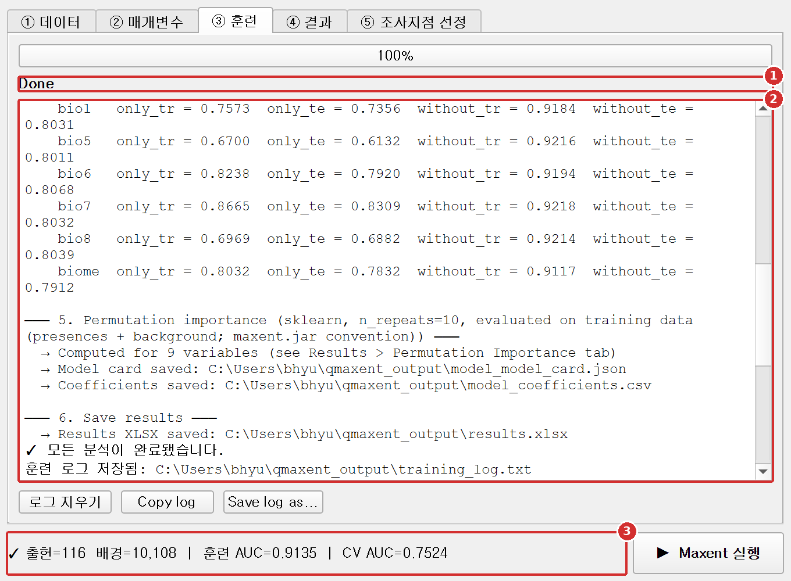
- 상태 줄에 결과가 표시됩니다.
- 로그 끝에 모델과 평가 결과 요약이 나옵니다.
- 도크 맨 아래 줄에는 핵심 수치가 계속 표시됩니다. 예:
출현=116 배경=10,108 | 훈련 AUC=0.9135 | CV AUC=0.7524
공간 교차검증의 AUC가 학습 AUC보다 낮은 것은 정상입니다. 모델이 학습에 쓰지 않은 지역에서 얼마나 잘 맞는지를 정직하게 보여 주는 값이기 때문입니다 (Roberts et al. 2017).
4부. 결과 확인과 지도 만들기(④ 결과)¶
10단계. 반응 곡선 보기¶
④ 결과 탭을 누릅니다.
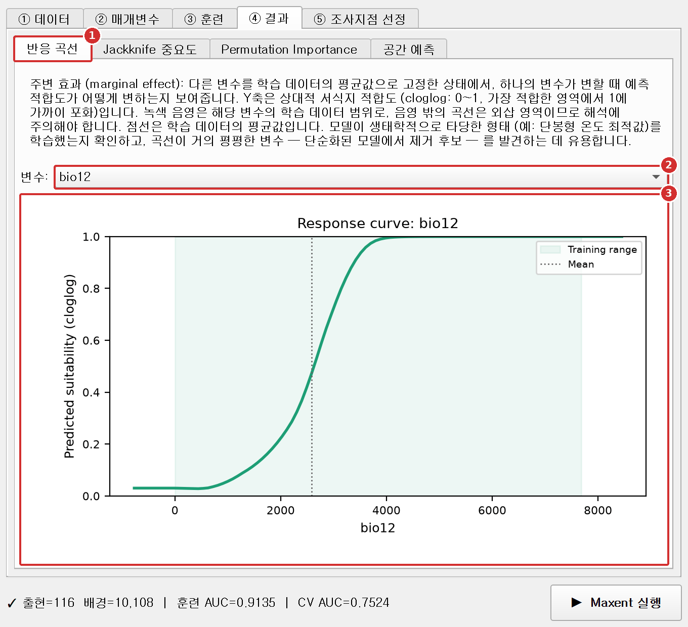
- 반응 곡선 하위 탭이 열려 있습니다.
- 변수에서 보고 싶은 변수를 고릅니다.
- 곡선은 그 변수 값에 따라 예측 적합도가 어떻게 바뀌는지 보여 줍니다. 음영 띠는 학습 지점들이 가진 값의 범위입니다.
11단계. 어떤 변수가 중요한지 보기¶
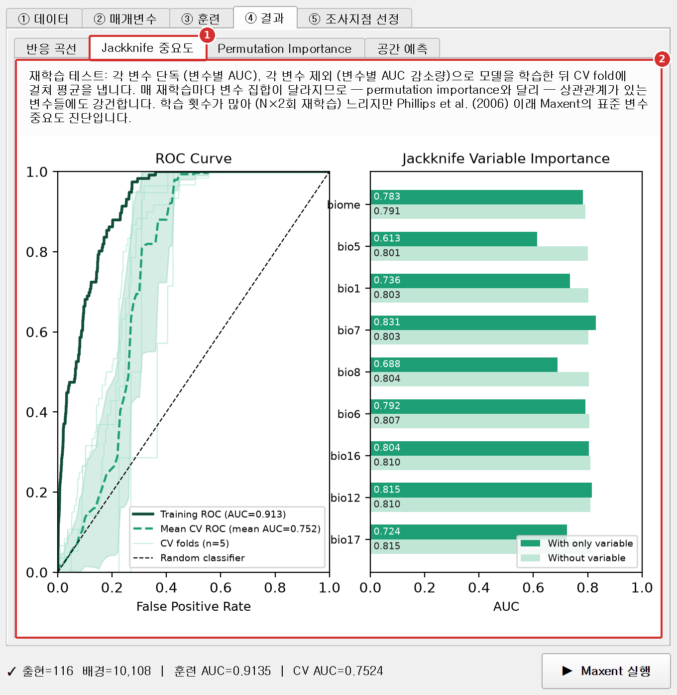
- Jackknife 중요도를 누릅니다.
- 왼쪽은 ROC 곡선, 오른쪽은 변수 하나만 쓴 모델과 그 변수를 뺀 모델의 성능 비교입니다.
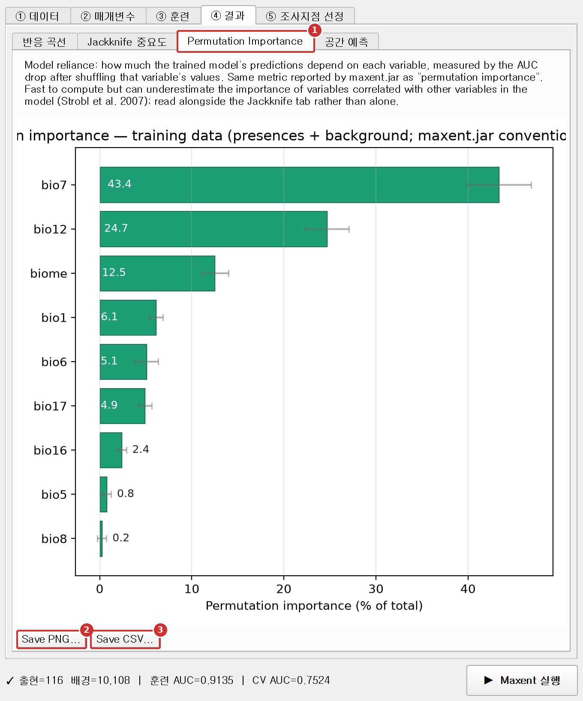
- Permutation Importance는 각 변수 값을 뒤섞었을 때 모델 성능이 얼마나 떨어지는지로 변수 순위를 매깁니다.
- Save PNG...로 그래프를 저장합니다.
- Save CSV...로 수치를 저장합니다.
12단계. 서식적합도 지도 만들기¶
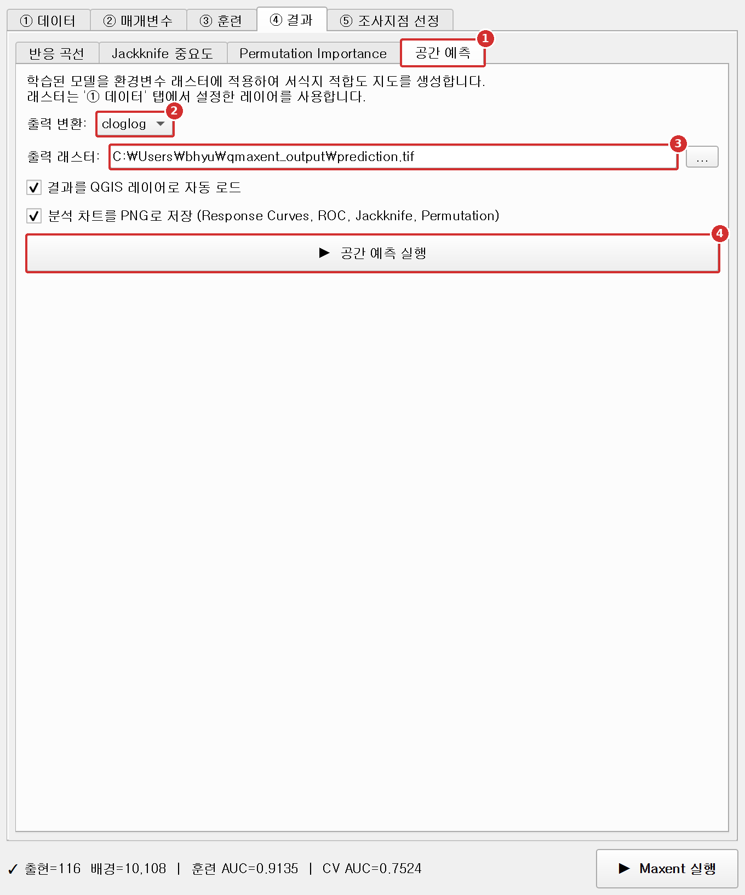
- 공간 예측을 누릅니다.
- 출력 변환은 cloglog로 둡니다. 0~1 사이 값으로 상대적 적합도를 나타냅니다 (Phillips et al. 2017).
- 출력 래스터는 지도가 저장될 위치입니다. ...를 눌러 바꿀 수 있습니다.
- ▶ 공간 예측 실행을 누릅니다.
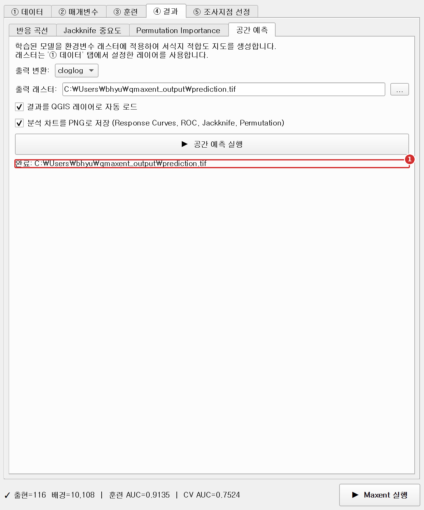
- 상태 줄에 저장 경로가 표시되면 지도가 저장되고 프로젝트에 추가된 것입니다.
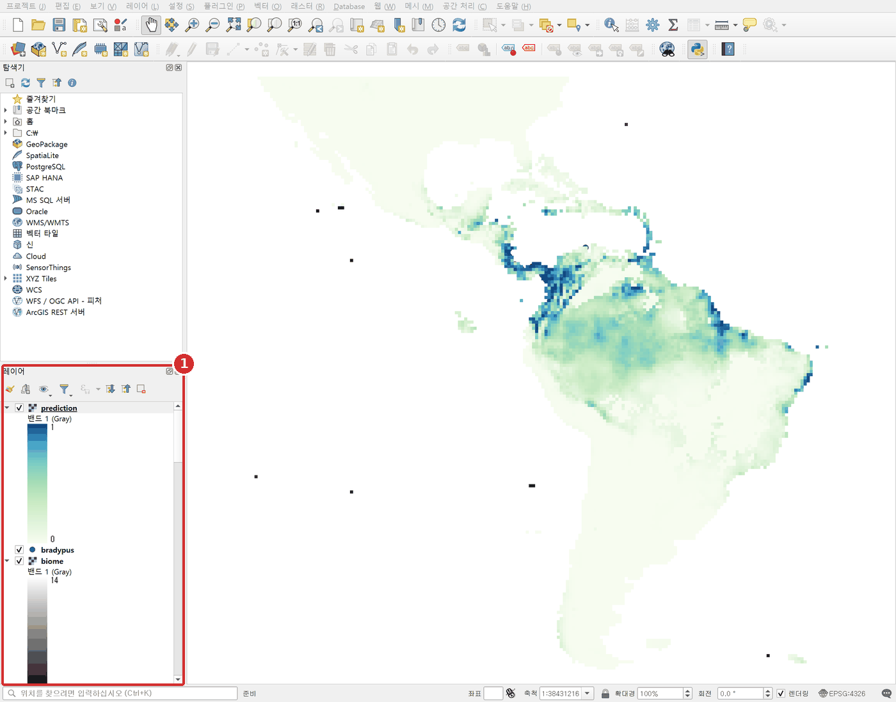
- 레이어 패널에
prediction레이어가 추가됩니다. 색이 진할수록 예측 적합도가 높은 곳입니다.
5부. 조사지점 고르기(⑤ 조사지점 선정)¶
13단계. 조사 조건 정하기¶
⑤ 조사지점 선정 탭을 누릅니다.
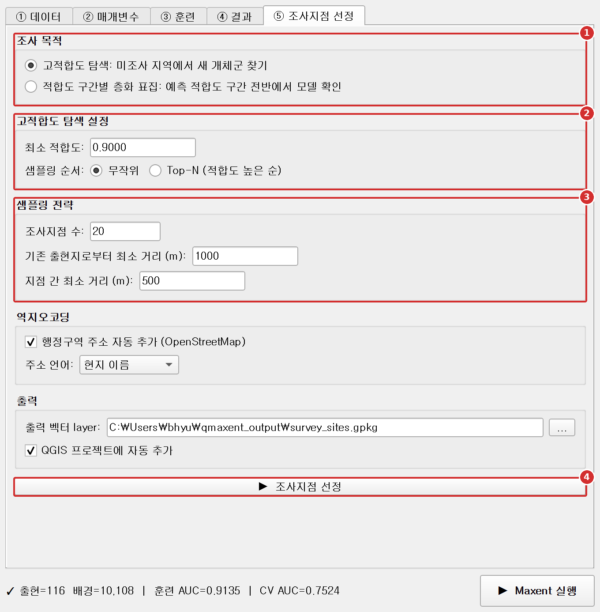
- 조사 목적: 적합하지만 아직 조사하지 않은 곳에서 새 개체군을 찾으려면 고적합도 탐색을 고릅니다.
- 고적합도 탐색 설정: 최소 적합도는 조사지점이 가져야 할 가장 낮은 지도 값입니다.
- 샘플링 전략: 조사지점 수, 그리고 기존 기록 및 다른 조사지점과 떨어져야 할 거리(미터)를 정합니다.
- ▶ 조사지점 선정을 누릅니다.
14단계. 조사지점 확인¶
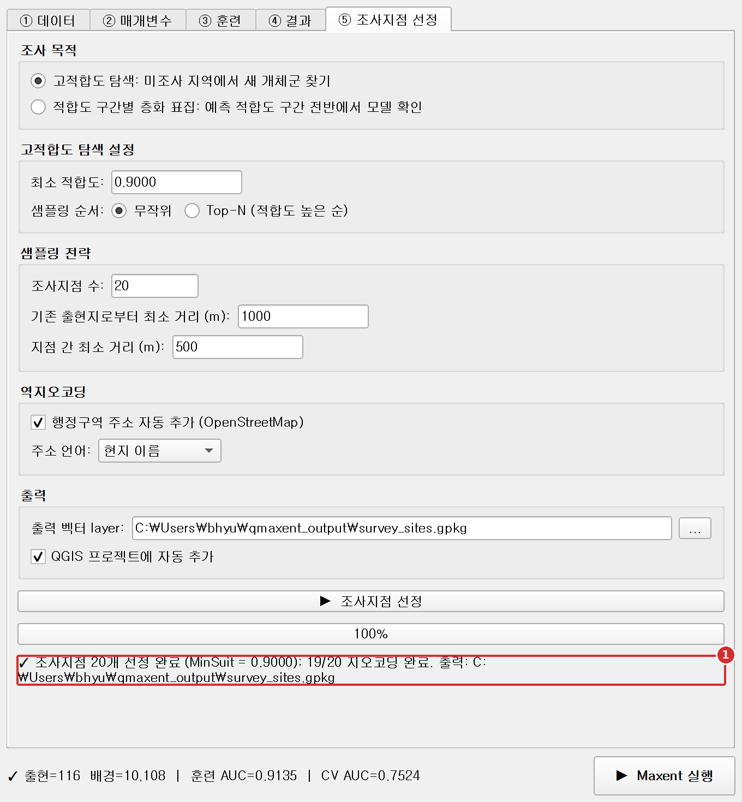
- 상태 줄에 선정된 조사지점 수와 GeoPackage 저장 위치가 표시됩니다.
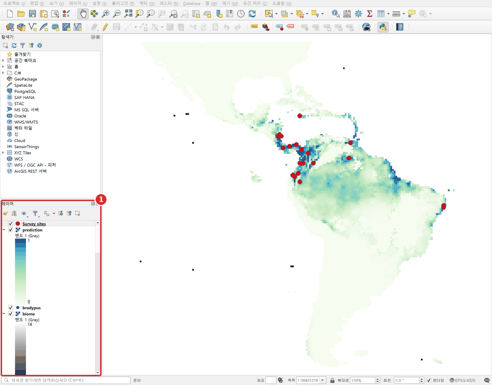
- 조사지점 레이어가 지도 위에 추가됩니다. 속성 테이블을 열면 지점별 좌표, 적합도 값, 그리고 역지오코딩을 켰다면 주소까지 볼 수 있습니다.
지금까지 한 일¶
출현 지점과 환경변수 래스터를 불러오고, 래스터 격자를 점검하고, 정규화된 Maxent 모델을 학습하고, 공간 교차검증으로 평가하고, 반응 곡선과 변수 중요도를 읽고, 서식적합도 지도를 만든 뒤, 그 지도를 현장 조사지점 목록으로 바꾸었습니다. 종분포모형의 전체 과정을 QGIS 안에서 마친 것입니다.
다음 단계¶
- 사용 가이드의 각 장에서 버튼과 설정이 하는 일과, 언제 기본값을 바꾸면 좋은지 알아보세요.
- Bradypus 예제에서 그래프 하나하나를 더 자세히 읽어 보세요.
- Ariolimax 예제로 격자가 맞지 않는 래스터를 고치는 과정을 연습해 보세요.
- Pitta nympha 예제로 발표된 연구를 재현해 보세요.